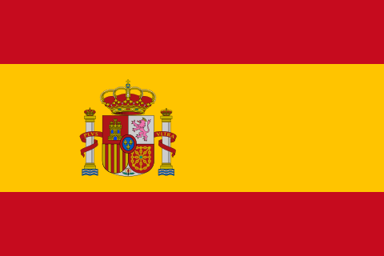
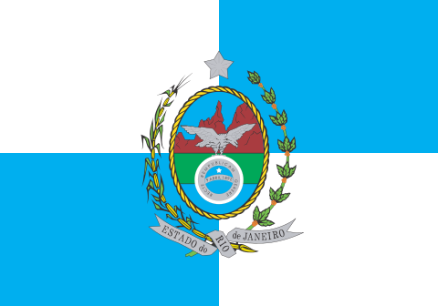
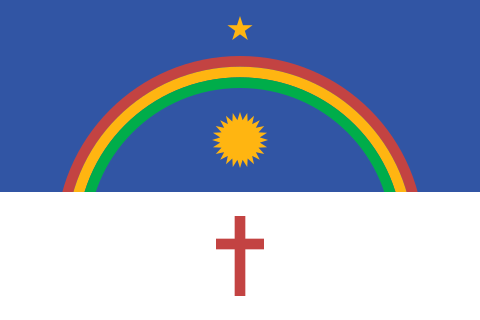
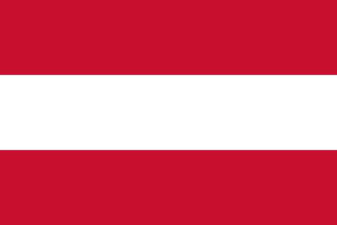
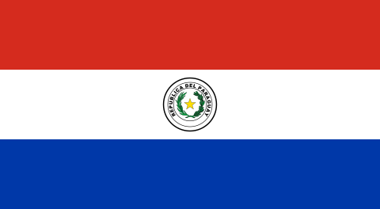
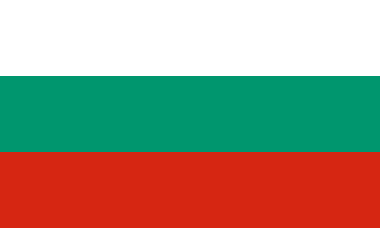
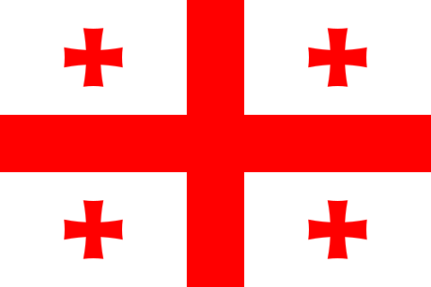
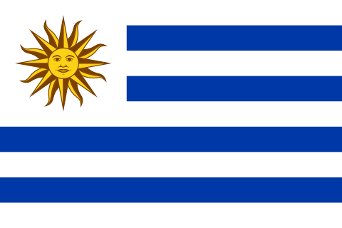
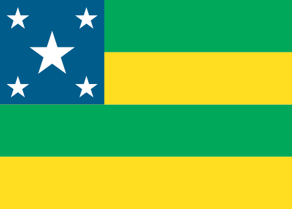
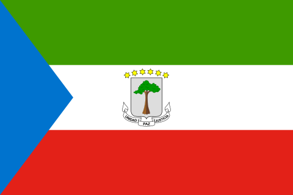

Brasil
"O território brasileiro possui como característica principal a sua grande extensão, o que o faz ser considerado como um país de dimensões continentais, ou seja, apresenta uma área equivalente à de um continente, detendo 8.514.876 km² de extensão. Por definição, todo país ou região que apresente uma área maior que a da Austrália (7.692.024 km²) é considerado continental, pois esse país equivale à extensão, quase totalmente, do menor continente existente na Terra, a Oceania.
Assim sendo, o Brasil é o quinto maior país existente, ficando atrás de Rússia, Canadá, China e Estados Unidos. Sua área é tão grande que, a título de comparação, é pouco menor que a Europa, que possui cerca de 10,5 milhões de km². Dessa forma, podemos ter uma ideia do quanto o espaço geográfico e também o meio natural do nosso país são amplos e diversos, apresentando as mais distintas características.
A extensão do território brasileiro é marcada pela grande distanciação de seus pontos extremos de localização. No sentido norte-sul, o Brasil possui uma distância de 4.394 km entre o Monte Caburaí – ponto localizado no estado de Roraima e posicionado no extremo norte do país – e o Arroio Chuí, esse último posicionado no extremo sul, no Rio Grande do Sul. Já no sentido leste-oeste, a distância é bastante parecida, com 4.319 km separando a Nascente do Rio Moa (Acre), no extremo oeste, da Ponta do Seixas (Paraíba), no extremo leste."
Veja mais sobre "Território brasileiro" em: https://brasilescola.uol.com.br/brasil/territorio-brasileiro-localizacao-extensao-fronteiras.htm
Anatomia de tabelas Grandes
| Posiçao |
Unidade federativa |
população |
% da pop.total |
País comparável (habitantes) |
| 1 |
 São Paulo São Paulo |
46 024 937 |
22,2% |

Espanha (46 754 778) |
| 2 |
 Minas Gerais Minas Gerais |
20 732 660 |
10,0% |
 Burquina Fasso (20 903 273)
Burquina Fasso (20 903 273) |
| 3 |
 Rio de Janeiro |
16 615 526 |
8,0% |
 Camboja (16 718 965)
Camboja (16 718 965) |
| 4 |
 Bahia Bahia |
14 659 023 |
7,1% |
 Zimbabwe (14 862 924)
Zimbabwe (14 862 924) |
| 5 |
 Paraná Paraná |
11 835 379 |
5,7% |
 Tunísia (11 818 619)
Tunísia (11 818 619) |
| 6 |
 Rio Grande do Sul Rio Grande do Sul |
11 088 065 |
5,3% |
 Cuba (11 326 616)
Cuba (11 326 616) |
| 7 |
 Pernambuco |
9 051 113 |
4,4% |

Áustria (9 006 398) |
| 8 |
 Ceará Ceará |
8 936 431 |
4,3% |
 Papua-Nova Guiné (8 947 024)
Papua-Nova Guiné (8 947 024) |
| 9 |
 Pará Pará |
8 442 962 |
4,1% |
.svg.webp) Suíça (8 654 622)
Suíça (8 654 622) |
| 10 |
 Santa Catarina Santa Catarina |
7 762 154 |
3,7% |

Paraguai (7 132 538) |
| 11 |
 Goiás Goiás |
6 950 976 |
3,3% |

Bulgária (6 948 445) |
| 12 |
 Maranhão Maranhão |
6 800 605 |
3,3% |
Bulgária (6 948 445) |
| 13 |
 Espírito Santo Espírito Santo |
4 108 508 |
1,9% |

Geórgia (3 989 167) |
| 14 |
 Paraíba Paraíba |
4 030 961 |
1,9% |
Geórgia (3 989 167) |
| 15 |
 Amazonas Amazonas |
3 952 262 |
1,9% |
Geórgia (3 989 167) |
| 16 |
 Mato Grosso Mato Grosso |
3 784 239 |
1,8% |
Geórgia (3 989 167) |
| 17 |
 Rio grande do Norte Rio grande do Norte |
3 303 953 |
1,6% |

Uruguai (3 473 730) |
| 18 |
 Piauí Piauí |
3 270 174 |
1,6% |
 Bósnia e Herzegovina (3 280 819)
Bósnia e Herzegovina (3 280 819) |
| 19 |
 Alagoas Alagoas |
3 125 254 |
1,5% |
 Mónaco (3 278 290)
Mónaco (3 278 290) |
| 20 |
.svg.png) Distrito Federal Distrito Federal |
2 923 369 |
1,4% |
 Armênia (2 963 243)
Armênia (2 963 243) |
| 21 |
 Mato Grosso do Sul Mato Grosso do Sul |
2 833 742 |
1,4% |
 Albânia (2 877 797)
Albânia (2 877 797) |
| 22 |
 Sergipe |
2 211 868 |
1,1% |
 Gabão (2 225 734)
Gabão (2 225 734) |
| 23 |
 Rondônia Rondônia |
1 616 379 |
0,8% |
 Bahrein (1 701 575)
Bahrein (1 701 575) |
| 24 |
 Tocantins Tocantins |
1 584 306 |
0,8% |

Guiné Equatorial (1 402 985) |
| 25 |
 Acre Acre |
829 780 |
0,4% |
Comores (869 601) |
| 26 |
 Amapá Amapá |
774 268 |
0,4% |
 Guiné (786 552)
Guiné (786 552) |
| 27 |
 Roraima Roraima |
634 805 |
0,3% |
 Montenegro (649 335)
Montenegro (649 335) |
| Total |
27 Estados |
210.147.147 |
100% |
210.147.147 |
"Em razão de sua larga extensão no sentido leste-oeste, o Brasil apresenta uma variação grande de fusos horários, totalizando quatro regiões distintas. O primeiro fuso está duas horas atrasado em relação ao Meridiano de Greenwich (-2GMT, portanto) e abrange apenas as ilhas do Atlântico. O segundo e mais importante fuso (-3GMT) abrange a maioria dos estados brasileiros, incluindo o Distrito Federal e a capital Brasília, sendo, portanto, o horário oficial do país. O terceiro fuso (-4GMT) abrange alguns estados a oeste, a saber: Mato Grosso, Mato Grosso do Sul, Rondônia, Roraima e a maior parte do Amazonas. Já o quarto fuso (-5GMT) abrange uma pequena parte oeste do Amazonas e o estado do Acre.
As fronteiras do Brasil
Ao todo, o Brasil apresenta 23.102 km de fronteiras, sendo que 15.735 km são compostos por fronteiras terrestres e 7.367 km são fronteiras marítimas. Na América do Sul, o Brasil faz fronteira com quase todos os países do continente, com exceção apenas do Chile e também do Equador, o que representa toda a faixa de limitações terrestres do nosso país.
O Brasil faz fronteira com quase todos os países da América do Sul
Já nas áreas oceânicas, as fronteiras brasileiras estendem-se durante todo o Oceano Atlântico e são formadas quase que totalmente por praias e regiões completamente habitáveis, elevando o potencial turístico brasileiro. Vale lembrar que, além do espaço terrestre, o Brasil detém soberania sobre 12 milhas além do litoral (Mar Territorial), sem falar nas zonas contíguas e zonas econômicas exclusivas, que foram estabelecidas em tratados internacionais.
Em geral, quando falamos em território brasileiro, falamos em um espaço muito amplo e privilegiado, pois, além de ser um dos maiores países do mundo, o Brasil também é um dos que possuem as maiores áreas habitáveis e produtivas. Isso acontece porque os países maiores do que o nosso apresentam, em geral, muitas áreas inóspitas, como regiões polares, montanhosas ou desérticas, o que praticamente inexiste no Brasil. Portanto, em termos naturais, podemos dizer que o Brasil é um espaço dotado de inúmeras riquezas e importâncias."